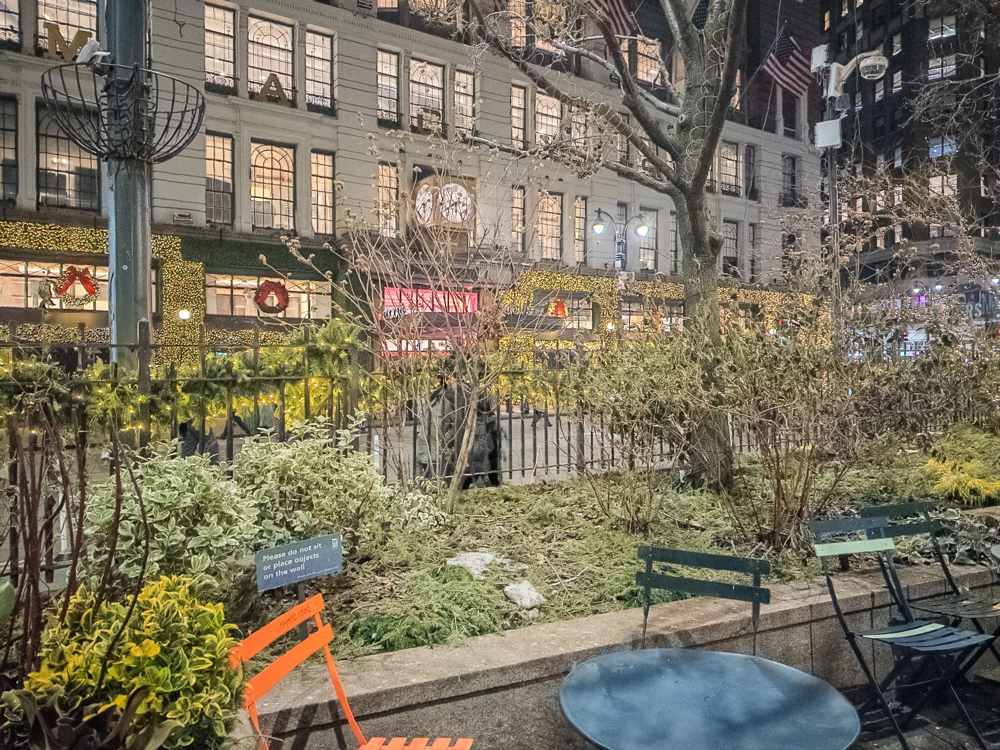
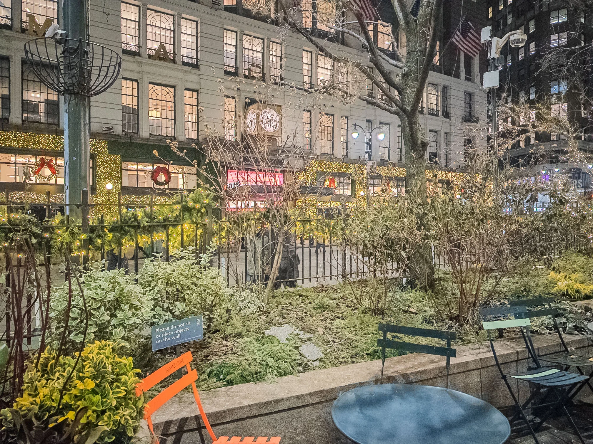
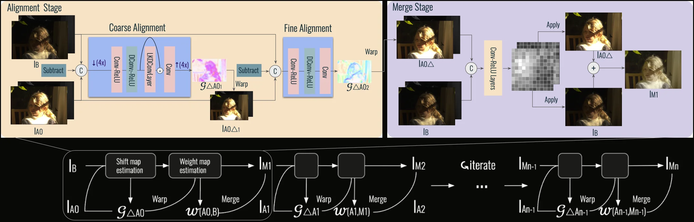
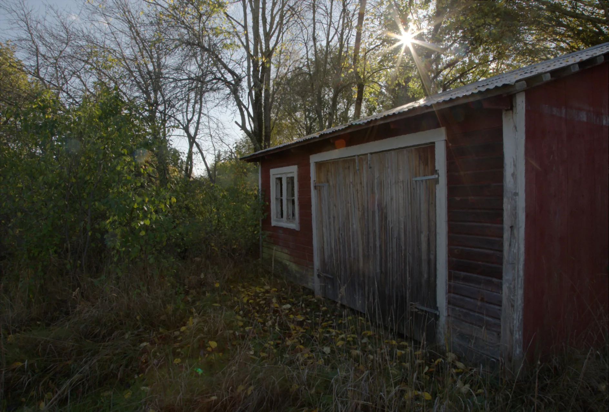
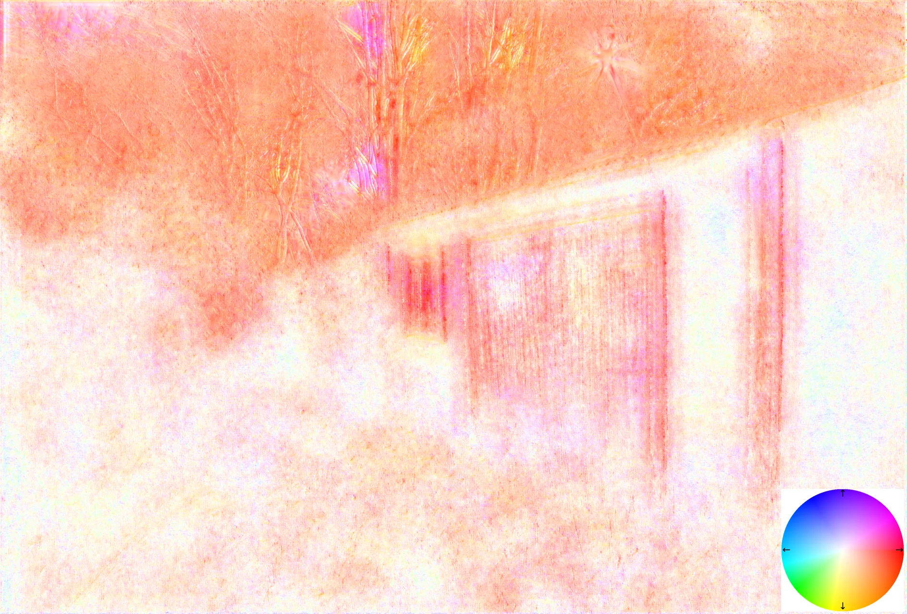
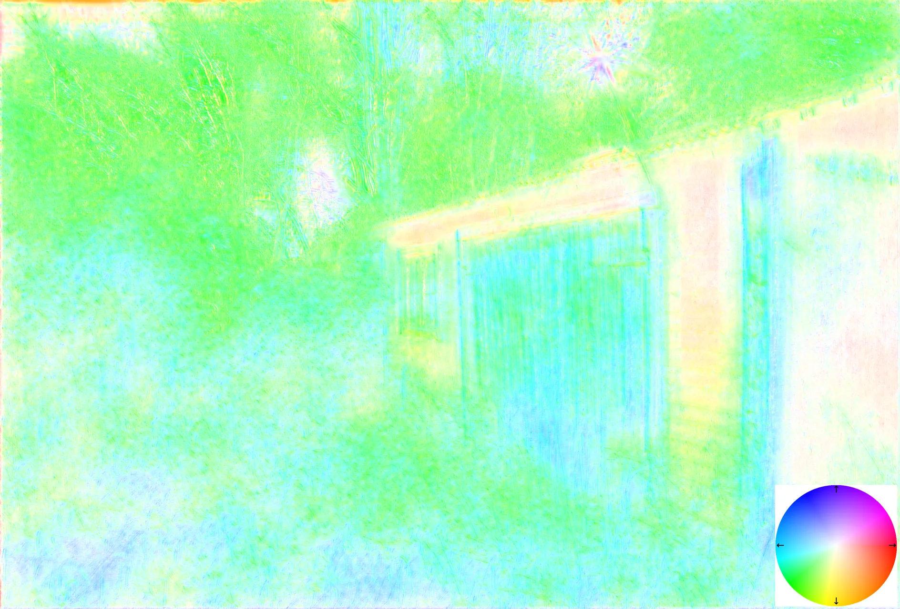
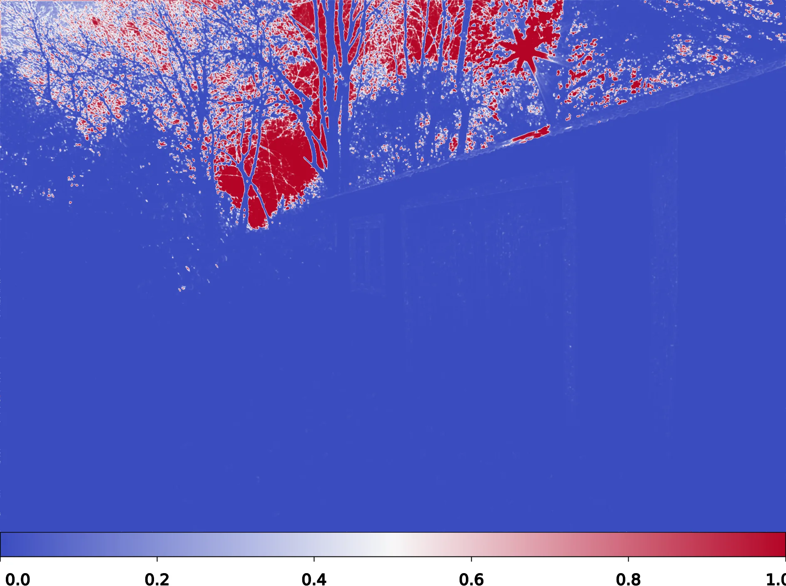
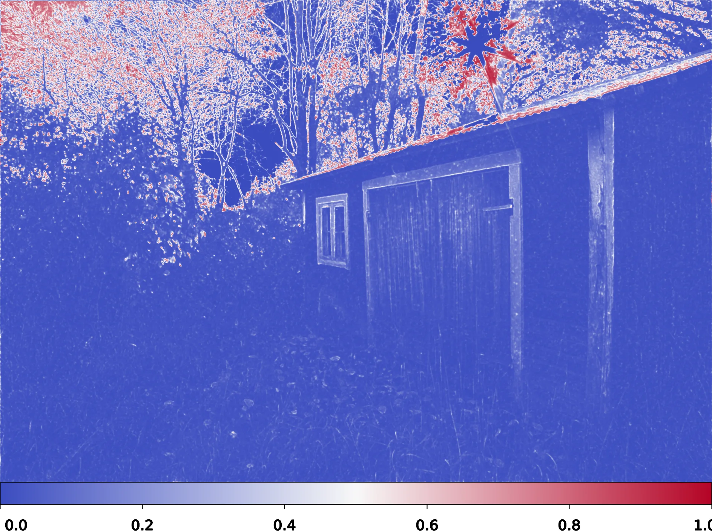
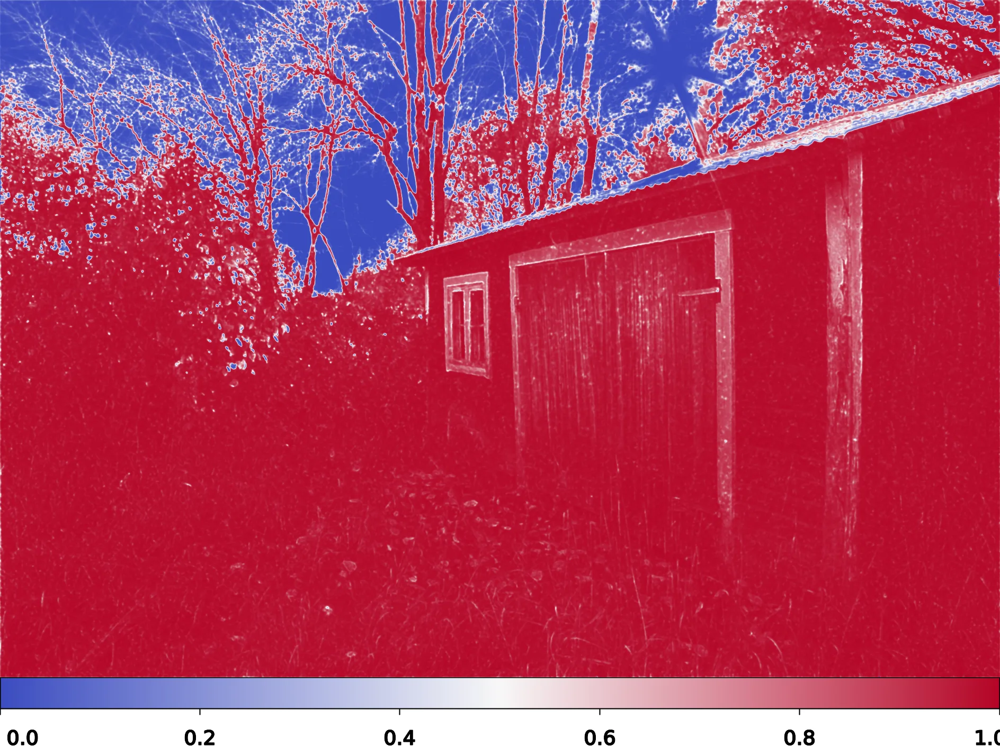

HDRFlow
LuckyHDR (Ours)


While the human eye can perceive an impressive twenty stops of dynamic range, smartphone camera sensors remain limited to about twelve stops despite decades of research. A variety of high dynamic range (HDR) image capture and processing techniques have been proposed, and in practice they can extend the dynamic range by 3–5 stops for handheld photography. This paper proposes an approach that robustly captures dynamic range competitive with state-of-the-art methods, using a handheld smartphone camera and lightweight networks suitable for running on mobile devices.
Our method operates indirectly on linear raw pixels in bracketed exposures. Every pixel in the final HDR image is a convex combination of input pixels in the neighborhood, adjusted for exposure, and thus avoids hallucination artifacts typical of deep neural networks. We validate the efficacy of our system on both synthetic imagery and real bracketed images shot with smartphone cameras. Our iterative inference architecture is capable of processing an arbitrary number of bracketed input photos, and we show examples from bursts containing 3–9 images. Our training process relies only on synthetic captures yet generalizes to real photos. Moreover, we show that this training scheme improves other state-of-the-art methods over their pretrained counterparts.
Bracketed exposures are aligned and merged into a single HDR result. The animation plays automatically when the section scrolls into view — switch scenes with the tabs below to replay.
Watching the bracket merge into the final HDR result…
LuckyHDR iteratively aligns and merges bracketed frames from shortest to longest exposure, gradually building up dynamic range. No network directly predicts pixel values — instead, lightweight neural networks predict shift maps for alignment and weight maps for merging.

Output pixels are always a weighted combination of actual captured pixels — never synthesized from scratch.
Only 66K parameters — 50x smaller than HDRFlow. Runs at interactive rates on smartphone hardware.
Trained entirely on synthetic data, generalizes robustly to real handheld photographs from any camera.
Handles 3–5+ bracketed frames of varying exposure, iteratively improving quality with each new frame.
LuckyHDR decouples HDR reconstruction into two lightweight predictions. At every iteration, one network predicts a shift map that aligns the incoming exposure, and another network predicts a weight map that decides how to blend it into the running estimate. The final pixel is always a convex combination of real captured pixels — never synthesized — which is why the method cannot hallucinate.
A dense, per-pixel 2D displacement field (dx, dy) that warps the alternate exposure into the base frame’s coordinates, compensating for handshake and small scene motion (swaying leaves, moving pedestrians). We predict it coarse-to-fine — a coarse stage handles up to ~52 pixels of motion, then a residual stage refines within ~6 pixels — so the alignment network stays tiny yet robust to both global and local motion.
In the visualizations below, hue encodes direction and saturation encodes magnitude.
A per-pixel blending coefficient in [0,1], produced by a softmax across the base and warped-alternate frames. The network learns to upweight “lucky” pixels — well-exposed, unsaturated, sharp — and downweight noisy shadows, clipped highlights, or residual misalignment. Over iterations, this is equivalent to iterative alpha compositing with learned, content-aware alphas.
Brighter regions indicate pixels pulled from the newly-aligned frame; darker regions keep the current estimate.

LuckyHDR Output
Shift Map (Iter 2)
Shift Map (Iter 3)
Merge Weights (Iter 1)
Merge Weights (Iter 2)
Merge Weights (Iter 3)Drag the slider to compare LuckyHDR against baseline methods on real handheld captures. Switch scenes with the tabs below.
LuckyHDR achieves state-of-the-art quality with 50x fewer parameters than the nearest competitor.
| Method | ITPI (ms) | Params (K) | PSNRl ↑ | PSNRμ ↑ | HDR-VDP2 ↑ | LPIPS ↓ |
|---|---|---|---|---|---|---|
| HDR+ | 8 | 0 | 43.7 | 27.3 | 31.2 | 0.427 |
| SAFNet | 208 | 1120 | 44.3 | 30.6 | 31.0 | 0.249 |
| SAFNet/p | 208 | 1120 | 36.8 | 25.5 | 27.3 | 0.460 |
| AHDRNet | 504 | 1520 | 40.4 | 30.0 | 29.8 | 0.305 |
| HDRFlow | 61 | 3270 | 48.7 | 33.2 | 38.1 | 0.226 |
| HDRFlow/p | 61 | 3270 | 50.2 | 26.7 | 32.7 | 0.507 |
| HDR-Trans. | 9371 | 1220 | 37.9 | 32.0 | 36.7 | 0.267 |
| AFUNet | 21318 | 1162 | 38.4 | 27.7 | 35.7 | 0.332 |
| LuckyHDR (Ours) | 62 | 66 | 50.0 | 33.6 | 40.5 | 0.241 |
| Method | ITPI (ms) | Params (K) | PSNRl ↑ | PSNRμ ↑ | HDR-VDP2 ↑ | LPIPS ↓ |
|---|---|---|---|---|---|---|
| HDR+ | 8 | 0 | 44.1 | 28.4 | 30.6 | 0.338 |
| SAFNet | 208 | 1120 | 46.4 | 32.4 | 33.8 | 0.164 |
| SAFNet/p | 208 | 1120 | 34.2 | 25.4 | 26.6 | 0.465 |
| AHDRNet | 504 | 1520 | 40.4 | 32.2 | 30.0 | 0.305 |
| HDRFlow | 61 | 3270 | 47.9 | 35.0 | 38.6 | 0.120 |
| HDRFlow/p | 61 | 3270 | 49.9 | 26.1 | 31.4 | 0.535 |
| HDR-Trans. | 9371 | 1220 | 37.9 | 31.8 | 36.4 | 0.253 |
| AFUNet | 21318 | 1162 | 38.5 | 30.6 | 35.4 | 0.335 |
| LuckyHDR (Ours) | 62 | 66 | 50.2 | 36.5 | 43.7 | 0.107 |
| Method | ITPI (ms) | Params (K) | PSNRl ↑ | PSNRμ ↑ | HDR-VDP2 ↑ | LPIPS ↓ |
|---|---|---|---|---|---|---|
| HDR+ | 8 | 0 | 45.5 | 28.0 | 46.8 | 0.308 |
| SAFNet | 208 | 1120 | 42.4 | 29.4 | 45.3 | 0.220 |
| SAFNet/p | 208 | 1120 | 38.0 | 24.7 | 38.8 | 0.441 |
| AHDRNet | 504 | 1520 | 43.7 | 31.4 | 37.4 | 0.311 |
| HDRFlow | 61 | 3270 | 49.8 | 31.6 | 48.5 | 0.154 |
| HDRFlow/p | 61 | 3270 | 51.8 | 26.2 | 44.8 | 0.503 |
| HDR-Trans. | 9371 | 1220 | 42.7 | 31.9 | 51.0 | 0.270 |
| AFUNet | 21318 | 1162 | 42.4 | 30.5 | 51.4 | 0.333 |
| LuckyHDR (Ours) | 62 | 66 | 52.0 | 33.0 | 53.2 | 0.143 |
Evaluation on our synthetic SI-HDR-fast test set with 3-frame input. All learning-based baselines re-trained on our data for fair comparison. /p rows use official pretrained checkpoints (dataset mismatch). ITPI benchmarked on an RTX A6000 at 1888×1280.
Drag the selection box on the main image to compare crop regions across methods. All images captured handheld on smartphones.
@article{li2026luckyhdr,
title={Lucky High Dynamic Range Imaging},
author={Li, Baiang and Yan, Ruyu and Tseng, Ethan and Zhang, Zhoutong and Finkelstein, Adam and Chen, Jiawen and Heide, Felix},
journal={ACM Transactions on Graphics (TOG)},
year={2026},
publisher={ACM New York, NY, USA}
}